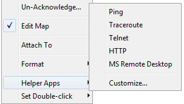
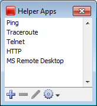
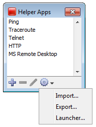

Using Helper Applications

The Helper apps context menu
You can use helper applications to get information for creating maps or to
troubleshoot problems. These programs are available through a Context menu.
To invoke a helper program:
- Control-click or right-click on a device.
- Select one of the helper applications to launch it using
the device as its target.
For example, the 'Ping' helper application invokes the system's ping utility:
generally /sbin/ping on Unix, Linux or MacOS X, or ping on
Windows. Including a URL as the helper application will invoke the system's
tool configured to handle the URL.
Notes:
- You can specify the same helper application for several devices at the same
time if more than one device is selected. The helper app is invoked for
each selected device.
-
The helper application that is invoked is platform-dependent: generally,
InterMapper will open a terminal program and issue a command to run the
helper.
- You can choose to invoke a Helper Application by double-clicking a device. See Using Double-Click Actions (Pg 1) for more information.
Editing Helper Applications

Use the Helper Applications Customize window to modify the built-in
helper applications, and add new ones.
To view the Helper Applications Customize
window:
-
Right/control-click a device. A drop-down menu appears.
-
From the Helper Applications submenu, choose Customize...
or
-
From the Monitor menu's Helper Apps submenu, choose Customize...
The Helper Apps window appears.
This window shows the list of built-in helper apps and any user-added
helper applications. To add, edit, or remove a helper application, see Adding
or Editing Helper Apps below. It also describes the Launcher, a platform-specific tool used to launch a helper app.
Adding or Editing Helper Apps

To add a new helper application:
To edit an existing helper:
-
In the Helper Apps window, click the helper you want to edit.
-
Click the Pencil tool. The Edit window appears, showing the current values
for the selected helper.
Enter values as follows:
- Title is the human-readable
name that appears on the Helper Applications sub-menu.
- Path is the full
file path name for the helper application
- Arguments that
will be passed along to the helper application.
Finally, the Command Line is the actual string that will invoked.
You can configure this string using the ${TITLE}, ${PATH}, ${ARGS}, and
${LAUNCHER} macros that will be substituted when the command is invoked.
In addition, you may use the ${ADDRESS}, ${PORT}, ${LABEL}, or ${DEVICENAME} macro.
Removing a Helper Application
You can remove any helper application definition you have created. Built-in
helper apps cannot be removed.
To remove a helper app definition:
- In the Helper Apps window, click the helper you want
to remove.
- Click Remove...
The Launcher

The Launcher is a platform-specific program that allows you to
invoke another program from InterMapper.
To open the Launcher window:

- From the Helper Apps window, click the Tools button. The Tools menu appears.
- Choose Launcher from the Tools menu. The Launcher window appears.
Exporting and Importing Helper Application Definitions
You can export your current Helper Application settings and import them to another instance of InterMapper.
To export the current Helper Applications definitions:
- From the Helper Apps window's Tools menu, choose Export... A standard file dialog appears.
- Specify a file name and location, and click Save.
To import Helper Application definitions from a file:
- From the Helper Apps window's Tools menu, choose Import... A standard file dialog appears.
- Navigate to the Helper Apps definitions file you want to use, and double-click it or click it and click Open. The Helper Apps definitions are replaced with the definitions in the selected file.
How does the Launcher invoke an application?
The method of launching an application is platform-dependent.
- On Windows, InterMapper uses a command shell.
-
On OSX, InterMapper opens a Terminal window.
-
On Unix/Linux, InterMapper invokes the shell.
Using Default Values
For each platform, there is a default value for each built-in helper
app. You can reset a helper app to its default values.
To reset a helper app to its default values:
- Click the Default button. The launcher string is reset to the default value for that platform.
Note: You don't have to use the launcher
for any helper, but it's often the easiest way to invoke another program on your computer.